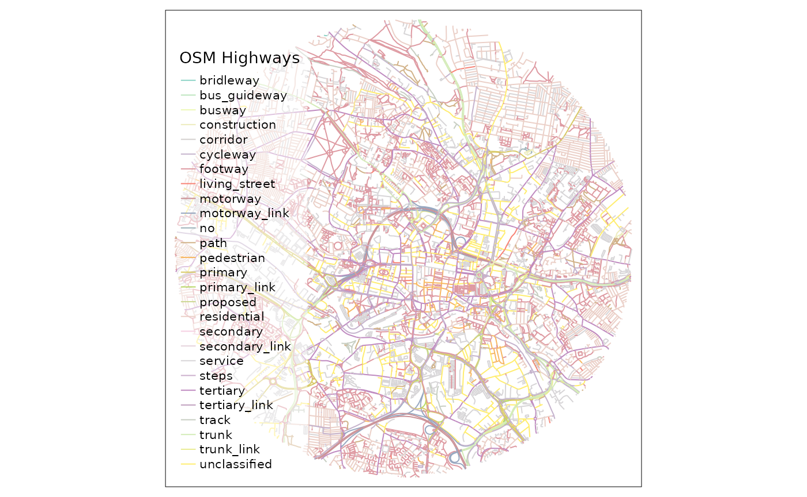
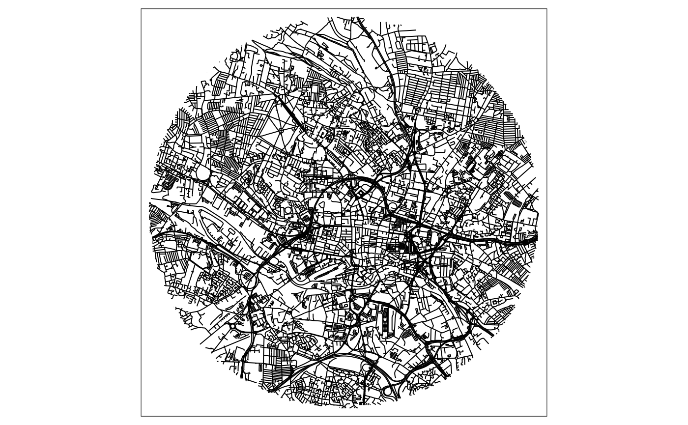

vignettes/SOTM_workshop.Rmd
SOTM_workshop.Rmd
This workshop is designed to be run on your own laptops. The workshop is aimed at everyone interested in using OpenStreetMap (OSM) to support sustainable transport planning, in professional or advocacy contexts through recategorisation of OpenStreetMap (OSM) transport infrastructure data. The focus will be on getting started, identifying, visualizing, and analyzing key tags and identifying gaps in walking, cycling, and wheeling networks. Participants will place OSM data in the context of other data sources to identify its unique advantages.
This workshop covers: * How to download and get OSM data from the R package osmextract * Basics on how the osmextract package works * How to visualise different types of network infrastructure * How to add value to OSM infrastructure data through the openinfra package
This workshop will be carried out using R. if you are new to R, you should install base R and RStudio before the workshop begins.
There is a great R and RStudio installation guide (Section A.1) by Garrett Grolemund, within Hands-On Programming with R for Windows, Mac, and Linux devices.
A number of packages will be used within this workshop, though namely osmextract and openinfra.
Here are some of the additional packages we will make use of within this workshop:
pkgs = c("tmap",
"sf",
"dplyr",
"remotes"
)These can be installed with:
install.packages(pkgs, repos = "http://cran.us.r-project.org")You can install the development versions of the osmextract and openinfra packages as follows:
# Enter the lines below into your console to install!
remotes::install_github("ropensci/osmextract")##
## * checking for file ‘/tmp/RtmpvuLGNk/remotes35bc4f599e74/ropensci-osmextract-dfee25d/DESCRIPTION’ ... OK
## * preparing ‘osmextract’:
## * checking DESCRIPTION meta-information ... OK
## * checking for LF line-endings in source and make files and shell scripts
## * checking for empty or unneeded directories
## Removed empty directory ‘osmextract/pkgdown’
## * building ‘osmextract_0.4.0.9000.tar.gz’
remotes::install_github("udsleeds/openinfra")##
## * checking for file ‘/tmp/RtmpvuLGNk/remotes35bc7b55eb71/udsleeds-openinfra-879799d/DESCRIPTION’ ... OK
## * preparing ‘openinfra’:
## * checking DESCRIPTION meta-information ... OK
## * checking for LF line-endings in source and make files and shell scripts
## * checking for empty or unneeded directories
## * building ‘openinfra_0.0.0.9000.tar.gz’Each package can then be loaded iteratively with library(tmap), library(sf), etc, or all at once with:
pkgs = c(pkgs, "osmextract", "openinfra")
lapply(pkgs, library, character.only = TRUE)[length(pkgs)]## [[1]]
## [1] "openinfra" "osmextract" "remotes" "dplyr" "sf"
## [6] "tmap" "stats" "graphics" "grDevices" "utils"
## [11] "datasets" "methods" "base"If installation has occurred correctly, running the code below locally (on your own device) should successfully create two plots:
One 5km radius circular buffer of the infrastructure network around Leeds (UK) City Centre, and
Secondly, a test plot just outside of the Institute of Transport Studies (ITS), at the University of Leeds.
# Pre-installed package data
data = sotm_data
# Test osmextract file (ITS Leeds = Institute of Transport Studies, Leeds.)
test_data = osmextract::oe_get(place = "ITS Leeds")##
|
| | 0%
|
|============== | 20%
|
|===================== | 30%
|
|============================ | 40%
|
|=================================== | 51%
|
|=========================================== | 61%
|
|================================================== | 71%
|
|========================================================= | 81%
|
|================================================================ | 91%
|
|================================================================== | 95%
|
|======================================================================| 100%
## 0...10...20...30...40...50...60...70...80...90...100 - done.
## Reading layer `lines' from data source `/tmp/RtmpvuLGNk/test_its-example.gpkg' using driver `GPKG'
## Simple feature collection with 189 features and 9 fields
## Geometry type: LINESTRING
## Dimension: XY
## Bounding box: xmin: -1.562458 ymin: 53.80471 xmax: -1.548076 ymax: 53.81105
## Geodetic CRS: WGS 84
tmap::tm_shape(data |> dplyr::select("highway")) +
tmap::tm_lines(col = "highway", title.col = "OSM Highways") +
tmap::tm_layout( legend.bg.alpha = 0.5, legend.bg.color = "white")
tmap::tm_shape(test_data |> dplyr::select("highway")) +
tmap::tm_lines(col = "highway", title.col = "OSM Highways") +
tmap::tm_layout( legend.bg.alpha = 0.5, legend.bg.color = "white" )
The osmextract package is an open-source project, which allows for fast downloading and importing of OSM infrastructure data from one of three OSM providers. We can view all osmextract available providers with the following:
osmextract::oe_providers() ## available_providers database_name number_of_zones number_of_fields
## 1 geofabrik geofabrik_zones 430 14
## 2 bbbike bbbike_zones 235 10
## 3 openstreetmap_fr openstreetmap_fr_zones 903 6osmextract uses Geofabrik, BBBike, and openstreetmap_fr as OSM data providers. These providers extract, select, and process geospatial data from OSM in .osm.pbf file format. The .pbf file format results in much faster read/write times and reduces filesizes, more information can be found on the OSM wiki.
The openinfra package, another open-source project, contains several functions that recategorises OSM infrastructure data from the default key=tag values to friendlier visuals.